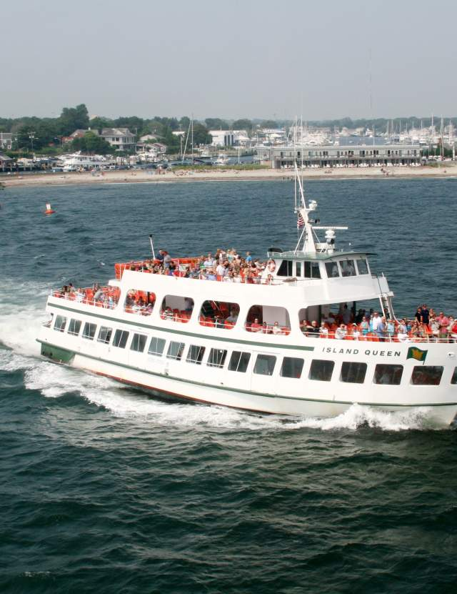
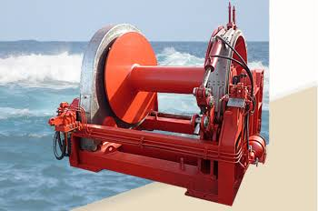
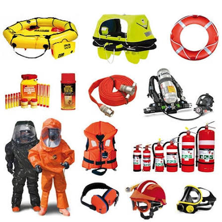

Kenya Marine Supplies Ltd is a leading supplier of marine equipment and services in Kenya. Established in 1990, the company has grown to become a trusted partner for maritime businesses across the region. With a commitment to quality and customer satisfaction, Kenya Marine Supplies Ltd has built a reputation for providing reliable products and exceptional service.

The development of marine supplies in Kenya has been driven by the growing maritime industry and the need for reliable equipment and services. Kenya Marine Supplies Ltd has played a key role in this development, providing high-quality products and support to maritime businesses across the region.

We offer a wide range of marine equipment and services to meet the needs of our clients. Our product line includes navigation aids, safety gear, and maintenance tools. We also provide expert advice and support to help you make informed decisions about your marine needs.
